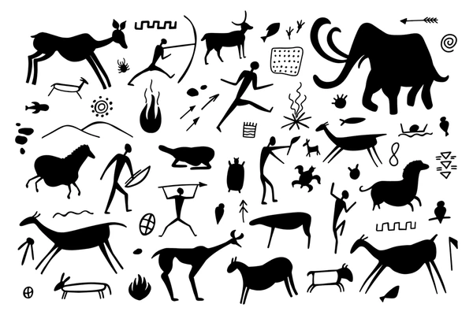
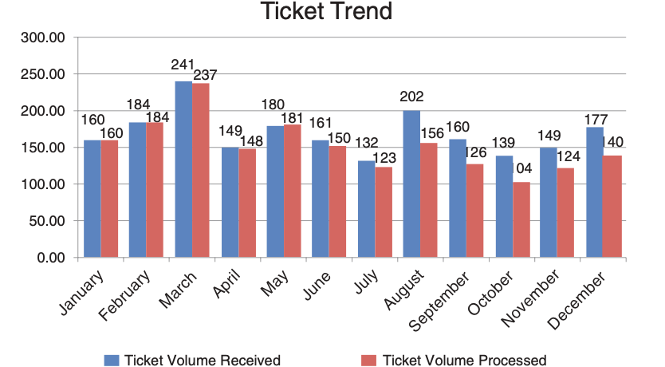

Agenda
No
Nope
No chance

Qué es Storytelling?


üî• Las historias son la primera tecnolog√≠a humana.
Cuando las estadísticas confunden …


Cuarteto de Anscombe: Mismos números, patrones distintos
Ohh, nuestros cerebros son hackables…


Narrativa
Usa trucos de Storytelling (narrativa) para crear presentaciones que serán recordadas y que causarán impacto

üé≠ Emociones inspiran acci√≥n
Más que gráficos bonitos
 üî¢ No compartas números
 ü™∂Comparte una historia
ü™∂Comparte una historia
(C) Storytelling with Data, por Cole Nussbaumer Knaflic.
Visualización …
- Gráficos claros y comprensibles
- Elección correcta del gráfico
- Patrones y anomalías visibles
- Datos complejos → ideas simples

⌛ Si no se entiende en 5-7 segundos, simplifica o cambia el título.
Ejemplos

❌ Chartjunk

✅ Good Chart
Mejores Gráficos para tus Datos


(C) Essential chart types for data visualization, by Atlassian.


ü•± 1¬∞ version \(<\) ‚Ķ \(<\) üòä última version


ü§ñ Caso de Estudio
Problemática
Debes preparar un pitch rápido para gerencia a partir de un dataset de ventas por región y trimestre.
El reto es extraer la historia clave y comunicarla de manera clara y convincente.
- ChatGPT / Gemini → genera un guion narrativo.
- Napkin AI → propone visualizaciones efectivas.
- Midjourney → crea una imagen de portada.
- PowerBI → crea aplicativo con Copilot.